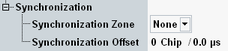

The parameters in this section configure the synchronization to other signaling applications.

Select the same synchronization zone in all signaling applications that you want to synchronize. "None" means that the application is not synchronized to other signaling applications.
Synchronizing signaling applications means synchronizing the used system time. It is useful, for example, for evaluation of message logs, because the time stamps in the logs are synchronized.
Synchronizing two WCDMA signaling applications means also synchronizing the used system frame numbers.
This parameter is suspended in the state CEST (connection established).
Configures the timing offset at cell start, relative to the time zone.
Without offset, the cell signal starts with system frame number 0 and a system time according to the time zone. With an offset, the cell starts with delay: system frame number 0 plus the |offset| and a system time according to the time zone plus the |offset|.
This parameter is suspended in the state CEST (connection established).
Option R&S CMW-KS410 is required.
Remote command: